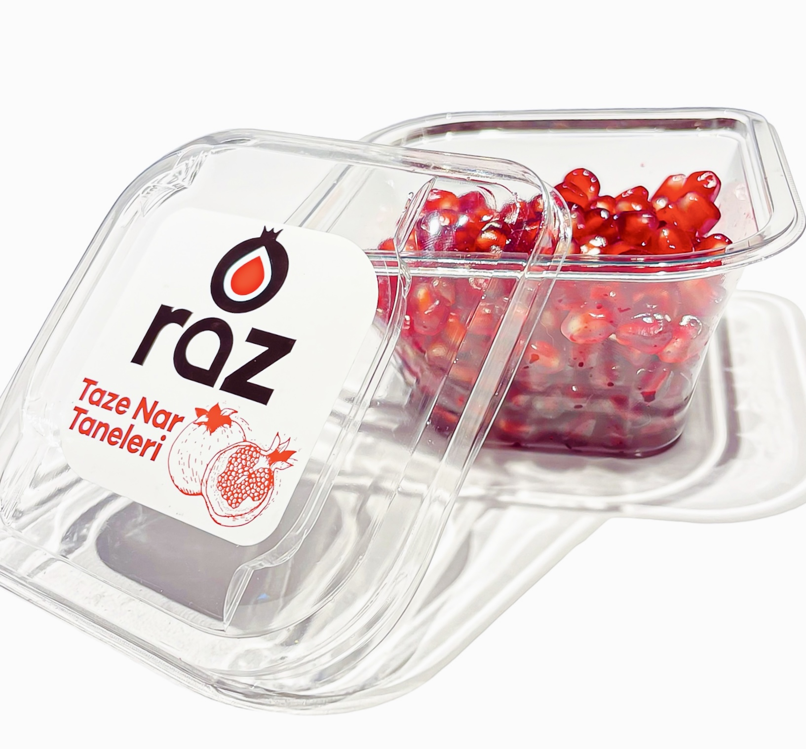

MAP PaketlemeNar Tanesi
Hijyenik taneleme prosesi
Avrupa'nın en büyük tane üreticisi
Farklı gramajlarda modifiye atmosfer altında paketlenen taze nar taneleri ürünlerimiz; restoran, market ve son tüketicilerimize kolay ve hızlı tüketim ihtiyaçları göz önüne alınarak ulaştırılmaktadır.
Sağlıklı bir atıştırmalık olarak — ev içinde, ev dışında, hareket halindeyken veya dilediğiniz anda — günlük antioksidan ihtiyacınızı karşılar. İster ayıklanmış meyve olarak ister salatalarınız, tatlılarınız, içecek tarifleriniz ve hızlı mutfak kreasyonlarınız için garnitür olarak kullanım rahatlığı sunar.
- Farklı gramajlar
- Modifiye atmosfer
- Günlük antioksidan